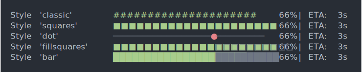

| cli_progress_styles {cli} | R Documentation |
The following options are used to select a style:
cli_progress_bar_style
cli_progress_bar_style_ascii
cli_progress_bar_style_unicode
cli_progress_styles()
On Unicode terminals (if is_utf8_output() is TRUE), the
cli_progress_bar_style_unicode and cli_progress_bar_style
options are used.
On ASCII terminals (if is_utf8_output() is FALSE), the
cli_pgoress_bar_style_ascii and cli_progress_bar_style options
are are used.
for (style in names(cli_progress_styles())) {
options(cli.progress_bar_style = style)
label <- ansi_align(paste0("Style '", style, "'"), 20)
print(cli_progress_demo(label, live = FALSE, at = 66, total = 100))
}
options(cli.progress_var_style = NULL)

A named list with sublists containing elements
complete, incomplete and potentially current.